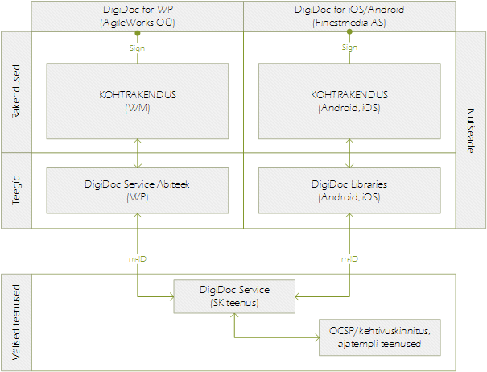

Eraalgatuslikult on täna Eestis loodud mobiilsetele platvormidele DigiDoc klientrakendused ja teegid. Finestmedia AS poolt arendatud rakendus toetab iOS/Android platvorme ning AgileWorks OÜ arendatud rakendus töötab WM platvormil. Täna turul eksisteerivad DigiDoc rakendused on teadaolevalt arendatud kõik kohtrakendustena, mille detailsem võrdlus olemasolevatest rakendustest on dokumendi lisas (vt Lisa 6).

Joonis 5. Eesti m-ID põhised eksisteerivad nutirakendused
Rakendused kasutavad allkirjastamiseks/verifitseerimiseks mobiil-ID-d koos DigiDocService teenusega (vt joonis 5).
Lisaks tuleb arvestada, et kui teiste eID kandjate (ID-kaart, digi-ID) puhul valitakse DigiDocService teenuse kasutust eirav lahendussuund, siis on vajalik leida lahendus eksisteerivate DigiDoc rakenduste toetamiseks.